Spiritual
Our Story
Spiritual is a Dhaka-based progressive/psychedelic rock band formed in 2010. Known for blending immersive soundscapes with meaningful expression, the band has built a distinct identity in Bangladesh's alternative music scene.
Spiritual was founded by Rifat Hossain Mim, Syed Erfan Hoque and Mubin Al Muhtadi Ayon with the band name conceived by Erfan. The group officially marked its formation with an opening concert on May 19, 2010. Initially formed as a trio, the band began by holding regular jamming sessions to develop their sound and musical chemistry. Three months later, former bassist Shimul Ahmed joined the lineup, followed by the addition of keyboardist Hero Hasan and guitarist Ratul Islam in the subsequent months. Over the years, the band has gone through several transitions, with members joining and departing at different stages of its journey. Despite these changes, Spiritual has continued to evolve and grow. The current lineup is Rifat Hossain Mim, Maruf Ahmed, Shadman Hossain, Amzad Hossain Agun and Ishnad Xabir Ahmed.
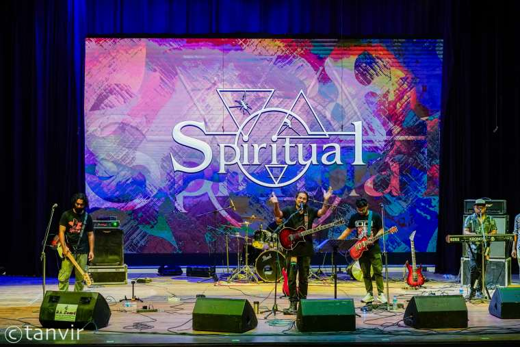
The Band Today
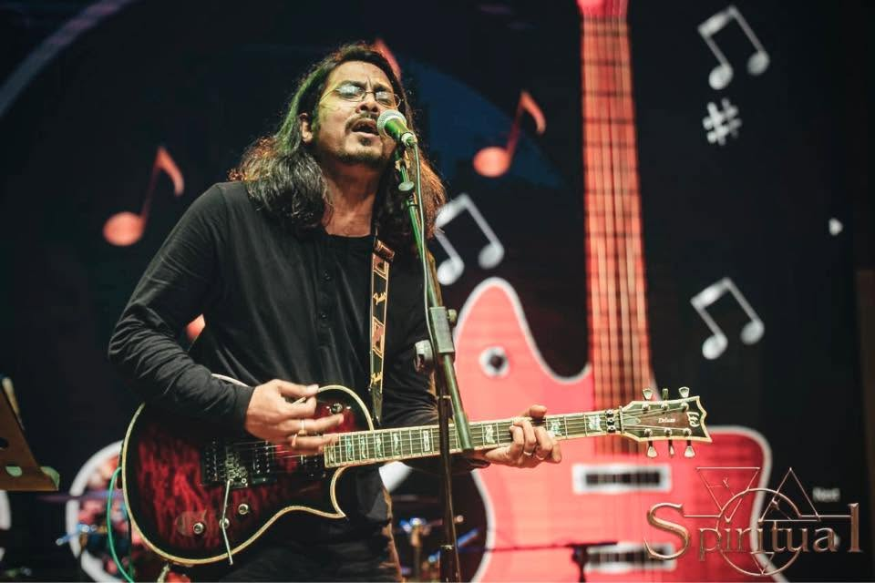
Rifat Hossain Mim
Lead Vocalist and Guitarist
2010 – present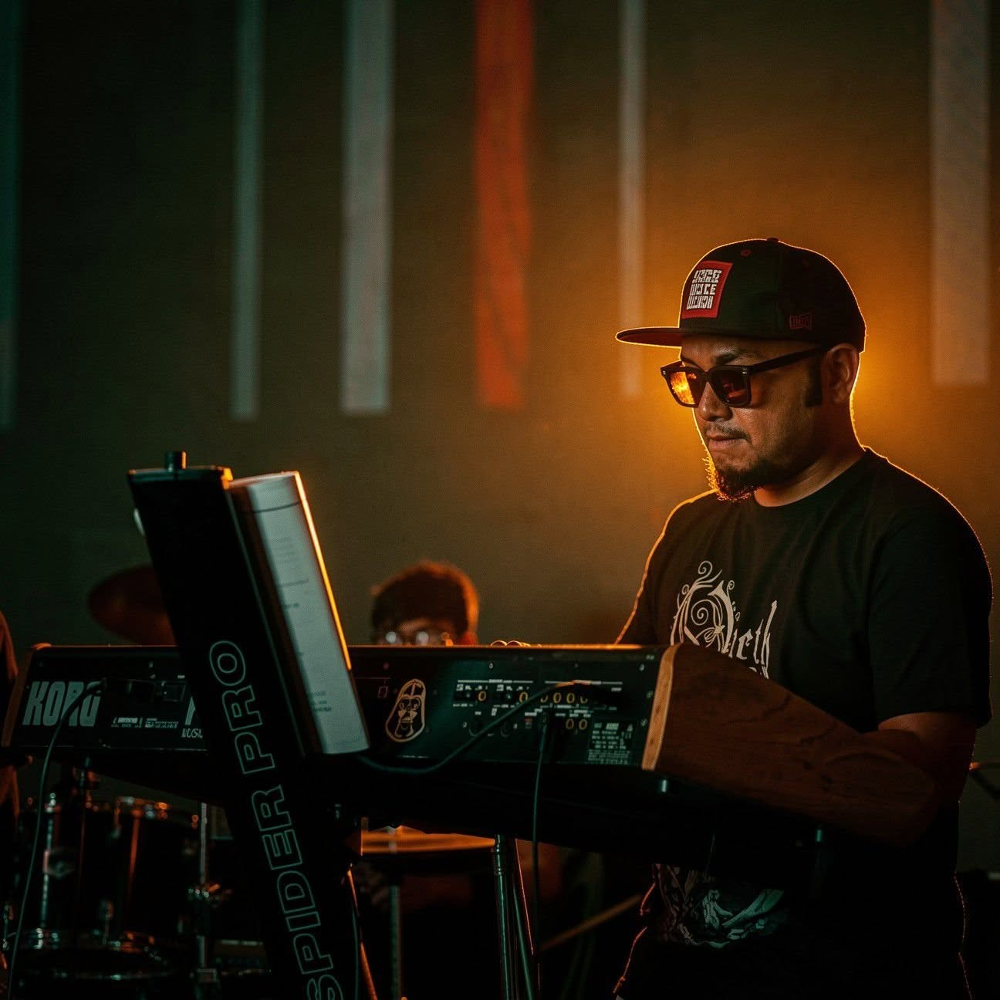
Maruf Ahmed Shawon
Backing Vocalist and Keyboardist
2018 – present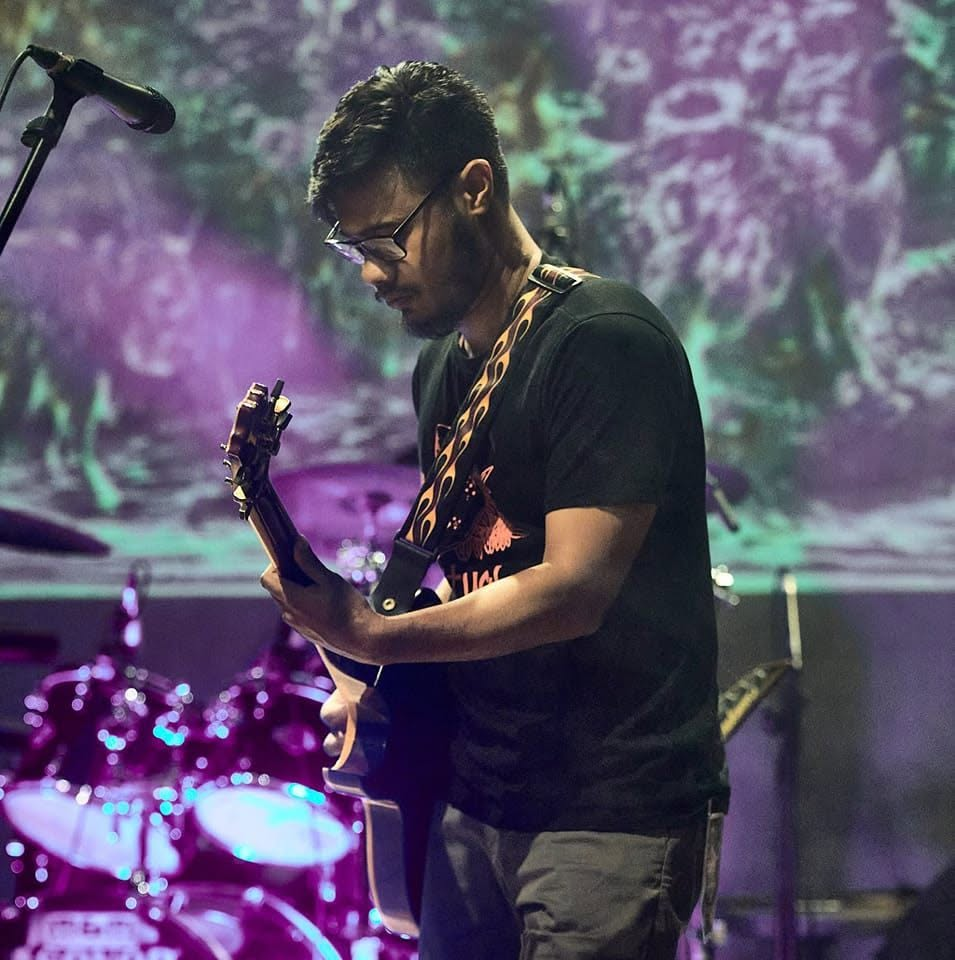
Shadman Hossain
Backing Vocalist and Guitarist
2020 – present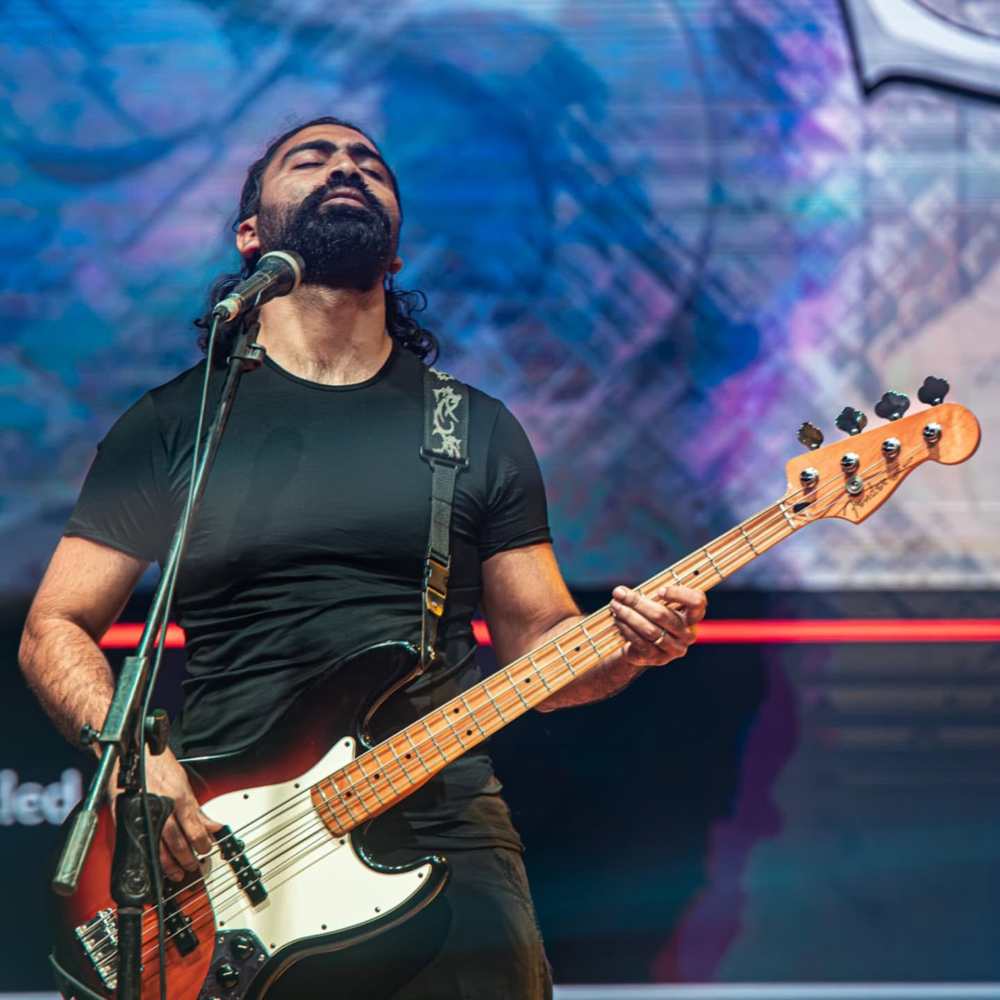
Amzad Hossain Agun
Backing Vocalist and Bassist
2020 – present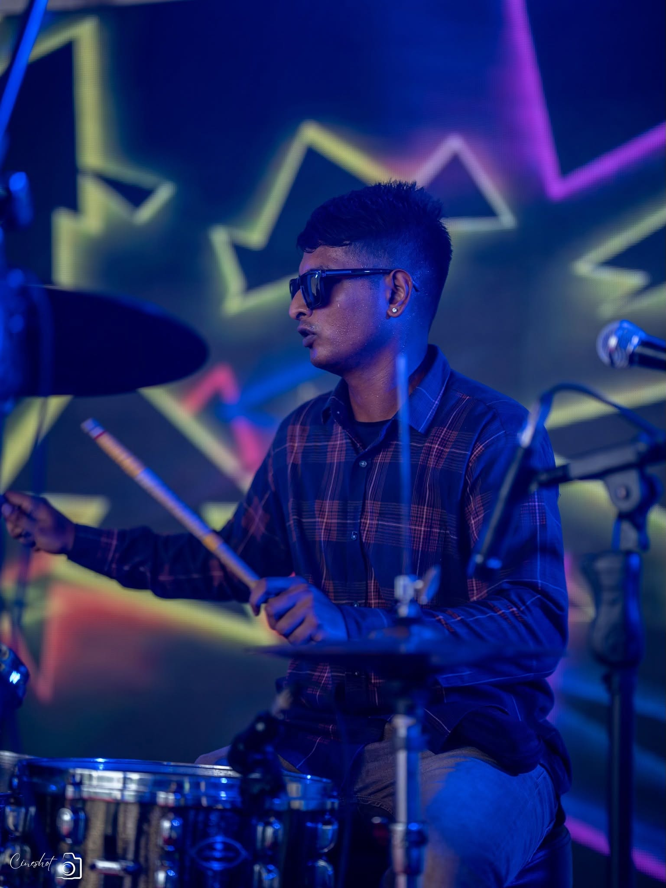
Ishnad Xabir Ahmed
Drummer
2026 – presentOur Sound
Spiritual explores a fusion of psychedelic and progressive rock, characterized by dynamic arrangements, atmospheric textures and introspective lyrical themes. Their music balances melodic expression with experimental structures, creating an immersive and emotionally engaging soundscape.
The band draws significant influence from iconic progressive and alternative acts such as Porcupine Tree, Pink Floyd, Tool, Opeth, The Pineapple Thief and King Crimson. While inspired by these artists, Spiritual continues to shape its own distinct musical identity through original compositions and evolving sonic exploration.
Released & Upcoming
Released tracks:
- Bondhu
- Dharonar Baire
- Dharonar Baire (unplugged)
Upcoming releases:
Spiritual is currently working on a full-length album, with 8 original tracks in production, marking a significant new chapter in the band's journey. The release strategy is designed as a phased rollout, beginning with the single "Dusshopno", followed by multiple releases in the coming months leading up to the full album launch. Each release will be supported by visual content, digital promotion and live performance integration, creating a continuous engagement cycle with the audience.
On Stage & On Air
Spiritual has collaborated with Coca-Cola and was part of their event in Cox's Bazar in 2017. Apart from that, the band has appeared in several live events, concerts, radio shows and TV programs — gradually building a presence within the independent music scene.
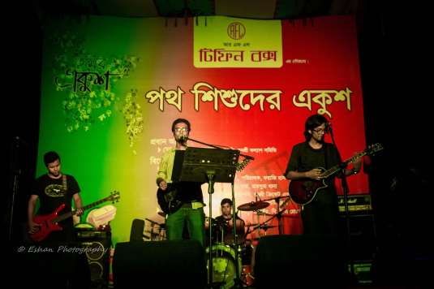
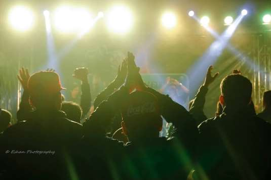
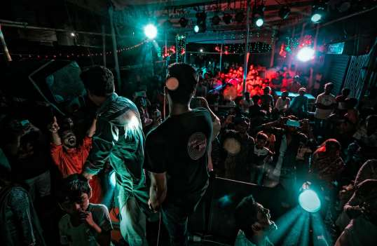
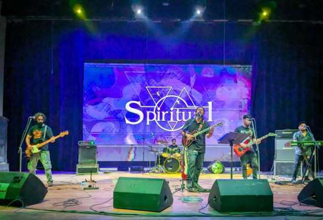
In addition to live shows, Spiritual has been involved in radio appearances, collaborative sessions and continuous songwriting and production. The band remains committed to evolving its sound through both live experimentation and studio work.
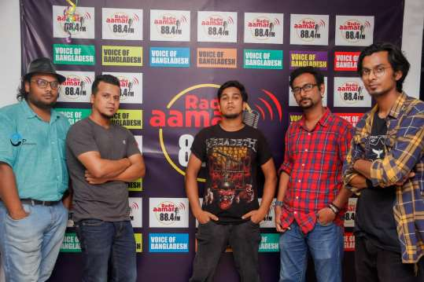
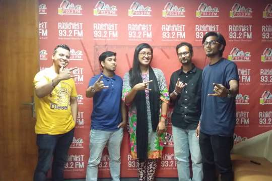
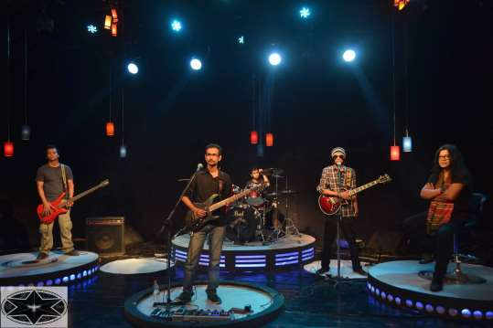
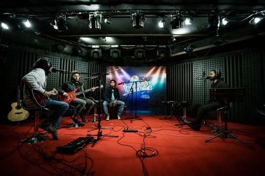
Sponsorship Opportunities
We offer flexible sponsorship opportunities designed to align your brand with Spiritual's 2026 comeback campaign, reaching a growing audience of young, music-driven consumers across digital platforms and live experiences.
Powered By [Title Sponsor]
- Maximum visibility across all campaign platforms
- Prominent logo placement in official music video
- Feature in all major promotional materials and announcements
- Priority branding across social media campaigns
- Opportunities for co-branded content and creative collaboration
Co-Powered By [Co-Title Sponsor]
- Strong brand presence throughout the campaign
- Logo placement in selected promotional content
- Mentions across social media and marketing materials
- Participation in collaborative content opportunities
Supporting Partners [Associate Partner]
- Brand mentions across campaign platforms
- Logo placement in selected creatives and posts
- Inclusion in community engagement activities
- Visibility within the campaign ecosystem
Collaborate With Spiritual
Spiritual is open to collaborating with brands that align with our vision of artistic expression, youth culture, and meaningful audience engagement. Through music, visual storytelling, and digital campaigns, we aim to create impactful experiences that connect brands with a highly engaged and growing audience.
📧 bandspiritual@gmail.com
📞 01672417507, 01703188846
Available for:
- Sponsorships
- Brand Collaborations
- Live Performances
- Campaign Partnership